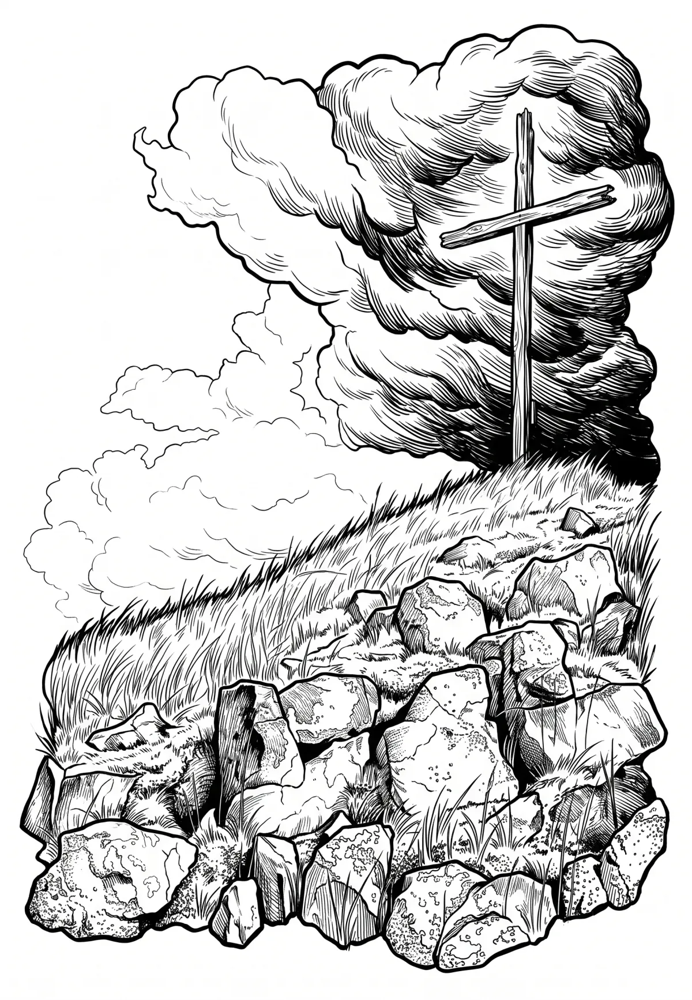

Velký Špičák
Velký Špičák (německy Großer Spitzberg nebo také Schmiedeberger Spitzberg) je 965 metrů vysoká hora v české části středních Krušných hor, v katastrálním území Černý Potok obce Kryštofovy Hamry.
Více na Wikipedii
Velký Špičák (německy Großer Spitzberg nebo také Schmiedeberger Spitzberg) je 965 metrů vysoká hora v české části středních Krušných hor, v katastrálním území Černý Potok obce Kryštofovy Hamry.
Více na Wikipedii